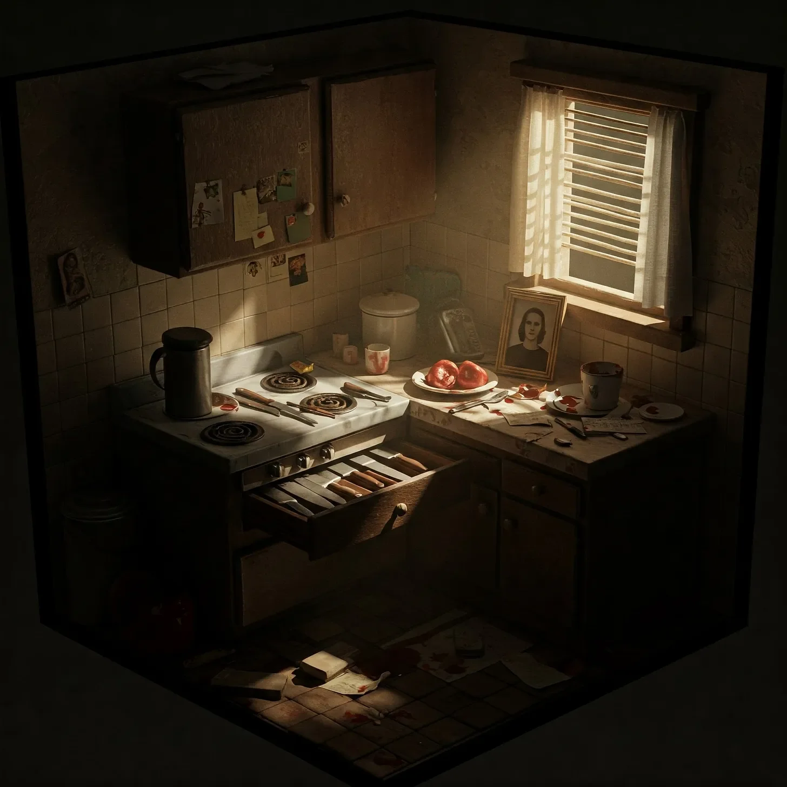

칼이 든 서랍이 위층 이웃이 걸을 때마다 덜컹거렸고, 그 떨림은 내가 지켜야 할 약속들을 상기시켰다. 식기들이 작은 풍경처럼 짤랑거리며, 앞으로 일어날 일들을 속삭이는 금속성 소리를 냈다.
[The knife drawer rattled every time the upstairs neighbor walked, each tremor a reminder of promises I needed to keep. The silverware clinked like tiny wind chimes, a metallic whisper of what was to come.]
사라의 장례식이 있은 지 석 달, 그의 발자국은 여전히 같은 패턴을 그리고 있었다: 오전 6시에 침실에서 화장실로, 6시 30분에 부엌으로, 7시 15분 정각에 현관문으로.
[Three months since Sarah’s funeral, and his footsteps still traced the same pattern: bedroom to bathroom at 6 AM, kitchen at 6:30, front door at 7:15 sharp.]
위층의 모든 삐걱거림과 바닥재의 신음소리를 다 외워버렸다. 이 오래된 건물의 뼈대가 나에게 말을 걸어왔고, 그의 움직임을 죄책감의 모스 부호처럼 들려주었다.
[I’d memorized every creak, every groan of the floorboards above. The building’s old bones spoke to me, telling tales of his movements like a morse code of guilt.]
내 손가락이 셰프 나이프의 손잡이를 어루만졌다 – 좋은 것으로, 작년 크리스마스에 사라가 고집해서 산 그 나이프였다. “그 구제 마트 쓰레기로는 제대로 된 다지기를 할 수 없어,” 그녀가 말했었다.
[My fingers traced the handle of the chef’s knife – the good one, the one Sarah had insisted we buy last Christmas. “You can’t dice properly with that dollar store trash,” she’d said.]
경찰은 이것을 뺑소니라고 불렀다. 그저 또 하나의 통계, 먼지만 쌓이는 서류 한 장이었다. 하지만 난 그날 밤 그의 얼굴을 보았다, 자신이 친 것이 – 혹은 누구를 친 건지 – 확인하려고 차에서 내렸을 때 가로등에 비친 그의 얼굴을. 지금 매일 아침 창문으로 보이는 그 얼굴이, 커피를 마시며, 태블릿으로 뉴스를 읽으며, 마치 내 인생을 박살내지 않은 것처럼 살아가고 있었다.
[The police called it a hit and run. Just another statistic, another file gathering dust. But I’d seen his face that night, illuminated by the street lamp as he stepped out of his car to check what – or who – he’d hit. The same face I now watched through his window every morning, sipping coffee, reading news on his tablet, living his life as if he hadn’t shattered mine.]
내 아파트는 감시초소가 되었다. 나는 그의 일정과, 습관들과, 약점들을 파악했다. 저녁 샤워로 욕실을 뿌옇게 한 뒤에는 항상 화장실 창문 잠그는 걸 깜빡하는 습관도.
[My apartment became a surveillance post. I learned his schedule, his habits, his weaknesses. The way he always forgot to lock his bathroom window after steaming up the place with his evening showers.]
목요일마다 금요일 아침 회의 전에 수면제를 먹는다는 것도. 그가 자주 시키는 배달 음식점 이름, 그가 추파를 던지는 바리스타, 일요일 밤마다 혼자 마시는 위스키 브랜드까지.
[How he took sleeping pills on Thursdays before his early Friday meetings. The name of his favorite takeout place, the barista he flirted with, the brand of whiskey he drank alone on Sunday nights.]
건물 관리인은 나를 3B의 조용한 세입자, 월세를 항상 제때 내는 홀아비로 알고 있었다. 매달 직접 만든 쿠키를 가져다주는 그 남자를 누가 의심하겠는가? 그녀가 자리를 비운 사이에 내가 발견한 새는 파이프 얘기를 꺼내자, 그녀는 아무 의심 없이 4B의 예비 열쇠를 내게 주었다.
[The building manager knew me as the quiet tenant in 3B, the widower who always paid rent on time. Who would suspect the man who brought her homemade cookies every month? She’d given me the spare key to 4B without question when I mentioned the leaking pipe I’d noticed while she was away.]
오늘은 목요일이었다. 위에서 그의 발소리가 화장실을 향해 움직였다. 샤워 소리가 들렸다 – 정확한 시간에 맞춰서. 이제 그의 거울에는 김이 서리고 있을 것이고, 그가 절대 제대로 닫지 않는 창문에도 김이 서리고 있겠지. 칼이 든 서랍이 마지막으로 한 번 덜그럭거렸고, 내가 그것을 열었다.
[Tonight was Thursday. Above me, his footsteps moved toward the bathroom. The shower started – right on schedule. Steam would be creeping across his mirror now, fogging up the window he never quite closed. The knife drawer rattled one last time as I pulled it open.]
복수는 차갑게 먹어야 제맛이라고들 하지만, 내가 비상계단을 오르면서 깨달은 건 그게 오히려 고급 와인 같다는 거였다 – 숨을 쉬게 하고, 그 진정한 복합미를 끌어내는 데는 시간이 필요했다. 그리고 3개월의 숙성 기간을 거친 후, 이 빈티지는 마침내 코르크를 뽑을 준비가 되었다.
[Some say revenge is a dish best served cold. But as I climbed the fire escape, I knew it was more like a fine wine – it needed time to breathe, to develop its full complexity. And after three months of aging, this vintage was finally ready to be uncorked.]
화장실 창문이 소리 없이 미끄러져 열렸다. 안에서는 마치 심판을 기다리는 영혼들처럼 수증기가 소용돌이쳤다. 샤워 소리는 여전히 흐르고 있었고, 작은 소리들을 가려주었다. 커튼 뒤로 그의 실루엣이 움직이며 멜로디도 없는 무언가를 흥얼거리고 있었다. 그날 밤 사라의 부서진 몸 위에 서서 흥얼거리던 바로 그 노래였다.
[The bathroom window slid open without a sound. Inside, steam swirled like spirits summoned for judgment. The shower was still running, masking any small noises. His silhouette moved behind the curtain, humming something tuneless. The same song he’d been humming that night, standing over Sarah’s broken body.]
나는 화장실 안으로 발을 들였고, 칼날이 달빛 조각처럼 희미한 빛을 반사했다. 습기가 나를 감쌌다, 죄책감처럼 짙게, 약속들처럼 무겁게. 어떤 이들은 이걸 살인이라고 부르겠지. 하지만 샤워 커튼 고리가 봉을 긁으며 소리를 낼 때, 나는 이것을 사라와의 약속을 지키는 것이라 생각했다.
[I stepped into the bathroom, knife reflecting the dim light like a sliver of moon. The humidity wrapped around me, thick as guilt, heavy as promises. Some would call this murder. But as the shower curtain rings scraped against the rod, I preferred to think of it as keeping my word to Sarah.]
결국, 약속을 지키지 않는다면 내가 무슨 남편이겠는가?
[After all, what kind of husband would I be if I didn’t follow through?]
커튼이 휙 젖혀졌다. 그의 눈이 커졌고, 입은 나를 알아보며 완벽한 O자를 그렸다. 내가 달려들었지만, 수증기 때문에 바닥이 미끄러웠다. 발이 미끄러지면서 칼이 목표를 빗나가 목 대신 어깨를 베었다.
[The curtain whipped back. His eyes widened, mouth opening in a perfect O of recognition. I lunged, but steam had made the floor treacherous. My foot slipped, the knife missing its mark, slicing his shoulder instead of his throat.]
그가 놀라운 힘으로 달려들었다, 젖고 벗은 채로 고함을 지르며. 우리는 세면대에 부딪쳤고, 그의 전동칫솔이 변기 속으로 떨어져 달그락거렸다. 그의 피가 모든 것을 미끄럽게 만들었고, 하얀 타일은 진홍빛 스케이트장이 되어버렸다. 그가 내 손목을 잡고 칼을 빼앗으려 했지만, 나에겐 중력과 증오가 있었다.
[He came at me with surprising strength, wet and naked and howling. We crashed into the sink, sending his electric toothbrush clattering into the toilet. His blood made everything slick, turning the white tile into a crimson skating rink. He grabbed my wrist, trying to twist the knife away, but I had gravity and hatred on my side.]
“제발요,” 그가 헐떡였다. “사고였어요. 전 절대로 의도한 게—”
[“Please,” he gasped. “It was an accident. I never meant—”]
칼이 그의 갈비뼈 사이를 파고들었고, 마치 사라와 와인 병을 따던 때처럼 부드러운 ‘팝’ 소리가 났다. 그제서야 그가 비명을 질렀고, 그 소리는 화장실 벽에 부딪혀 수증기 속에서 사그라들었다. 그의 무릎이 내 배를 가격해 몸이 접혔지만, 나는 놓지 않았고, 그가 비틀거리며 쓰러질 때까지 매달렸다.
[The knife found his ribs, sliding between them with a soft pop that reminded me of uncorking wine bottles with Sarah. He screamed then, a sound that echoed off bathroom walls and died in the steam. His knee caught my stomach, doubling me over, but I held on, riding him down as he stumbled.]
우리는 바닥에 세게 부딪쳤다. 칼이 미끄러져 나가면서 추상화처럼 붉은 자국을 남겼다. 그의 주먹이 내 턱을 가격했고, 눈앞에서 불꽃이 터졌다. 입안에서 쇠맛이 났고, 이가 흔들리는 게 느껴졌다. 하지만 고통은 이제 오랜 친구였다, 사라가 죽은 그날 밤부터.
[We hit the floor hard. The knife skittered away, leaving red streaks like abstract art. His fist caught my jaw, stars exploding behind my eyes. I tasted copper, felt teeth loose in their sockets. But pain was an old friend now, had been since the night Sarah died.]
내 손가락이 떨어진 칫솔을 찾아냈다. 무거운 손잡이가 무기가 되어 그의 관자놀이를 한 번, 두 번, 세 번 내리쳤다. 충격이 가해질 때마다 붉은 물방울들이 불길한 색종이처럼 수증기 속에서 춤췄다.
[My fingers found the fallen toothbrush. The heavy handle became a weapon, cracking against his temple once, twice, three times. Each impact sent droplets of red dancing through the steam like macabre confetti.]
그가 축 늘어졌지만, 아직 숨은 붙어있었다. 칼은 캐비닛 밑으로 미끄러져 들어가 있었다. 우리 밑으로 퍼져나가는 따뜻한 것에 무릎이 젖은 채, 나는 칼을 주워들었다. 그의 눈이 내 움직임을 좇았다, 흐릿하지만 의식은 있었다.
[He went limp, but still breathing. The knife had slid under the cabinet. I retrieved it, knees soaking in the spreading warmth beneath us. His eyes tracked my movement, glazed but aware.]
“그녀는 선생님이 되려고 공부하고 있었어,” 내 심장은 빠르게 뛰고 있었지만, 목소리는 흔들리지 않았다. “그걸 알았나? 그녀는 2학년 담임을 하고 싶어했어.”
[“She was studying to be a teacher,” I said, voice steady despite my racing heart. “Did you know that? She wanted to teach second grade.”]
칼날이 마지막으로 내려가 그의 심장에 자리를 잡았다. 그의 몸이 활처럼 휘었다가 가라앉았다. 샤워기는 계속 흐르고 있었고, 증거들은 분홍빛 소용돌이를 그리며 배수구로 씻겨 내려갔다.
[The blade descended one final time, finding its home in his heart. His body arched, then settled. The shower kept running, washing evidence down the drain in pink spirals.]
나는 오랫동안 거기 앉아있었다, 수증기가 내 피부 위에서 이슬이 되어 맺혔다. 몇 달 동안 나를 움직이게 했던 분노가 빠져나가고, 그 자리에 거의 평화와 같은 것이 남았다. 행복은 아니었다 – 그건 사라와 함께 죽었으니까 – 하지만 어려운 일을 마친 것 같은 조용한 만족감이었다.
[I sat there for a long time, steam turning to condensation on my skin. The rage that had fueled me for months drained away, leaving behind something that felt almost like peace. Not happiness – that died with Sarah – but a quiet satisfaction, like finishing a difficult task.]
일어서는 게 아팠다. 모든 것이 아팠다. 하지만 우리의 싸움 흔적을 지우며 청소를 하는 동안, 나는 더 가벼워진 것을 느꼈다. 약속의 무게가 벗겨지고, 그 자리를 완수의 단순한 명료함이 대신했다. 이제 사라는 편히 쉴 수 있을 것이다. 그리고 아마도, 어쩌면, 나도 그럴 수 있을 것이다.
[Standing hurt. Everything hurt. But as I cleaned up, erasing traces of our struggle, I felt lighter. The weight of my promise lifted, replaced by the simple clarity of completion. Sarah could rest now. And maybe, just maybe, so could I.]
나중에, 내 아파트에서, 건물 관리인이 그를 발견하는 소리를 들었다. 그녀의 비명이 마치 멀리서 들리는 자장가처럼 마룻바닥을 통해 아래로 새어 들어왔다. 나는 커피를 마시며, 경찰차 불빛이 내 천장을 빨강과 파랑으로 물들이는 것을 보며, 아침을 기다렸다.
[Later, in my apartment, I heard the building manager discover him. Her screams filtered down through the floorboards like a distant lullaby. I made coffee, watched the police lights paint my ceiling in red and blue, and waited for morning.]
아침 식사를 하려고 칼 서랍을 열었을 때 더 이상 덜거덕거리지 않았다. 건물의 오래된 뼈대는 마침내 그들의 비난 속삭임을 멈췄다. 그리고 어딘가에서, 사라가 미소 짓고 있기를 바랐다.
[The knife drawer didn’t rattle anymore when I opened it to make breakfast. The building’s old bones had finally stopped whispering their accusations. And somewhere, I hoped, Sarah was smiling.]